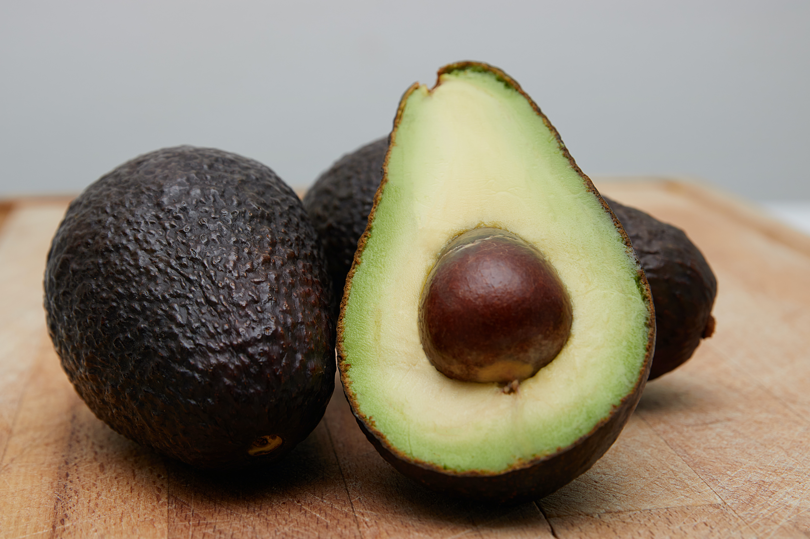

About Avocado
Avocado is a creamy and nutritious fruit known for its rich flavor and versatility. It is packed with healthy fats, vitamins, and minerals. Avocado trees thrive in warm climates and can be grown at home to enjoy fresh, homegrown avocados. Whether added to salads, sandwiches, or enjoyed as guacamole, avocados are a delicious and nutritious addition to your diet.
Steps to Grow Avocado
- Choose a sunny location with well-drained soil for planting avocado.
- Plant an avocado seed or purchase a grafted avocado tree from a nursery.
- Water avocado trees regularly, keeping the soil consistently moist but not waterlogged.
- Fertilize with a balanced fertilizer suitable for avocado trees according to the recommended schedule.
- Prune avocado trees to maintain a desirable shape and promote healthy growth.
- Avocado trees may take several years to bear fruit, but the reward is worth the wait.
- Harvest avocados when they are fully ripe, and the skin gives slightly to gentle pressure.
Extra Information
Avocados are not only delicious but also offer numerous health benefits. They contain monounsaturated fats, which are heart-healthy, and are a good source of vitamins C, E, K, and B-6. Avocado trees are sensitive to frost, so it's essential to protect them in colder climates. Consider adding avocados to your home garden for a sustainable and rewarding source of this nutritious fruit.